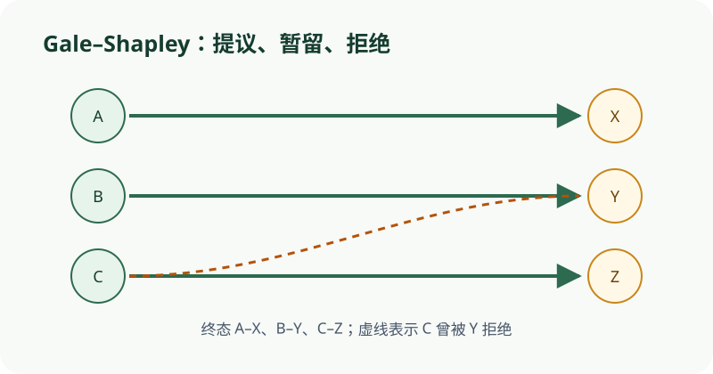

把‘提议—暂留—拒绝’拆成离散状态，重点观察两侧偏好排名的单调变化。
依据本地课程资料 discussion/dis01b.pdf 与 homework/hw02.pdf 重绘；交互用于解释概念，不替代题面或证明。

CS70 · 第 3 讲
本讲围绕 Propose-and-Reject 算法，证明其终止性、稳定性与最优/最劣性，并扩展到允许未匹配实体的情形，最后通过合并操作 \(R \wedge R'\) 揭示稳定匹配集合的格结构。
一个稳定匹配实例包含两个大小相等的有限集合：工作集合 \(J = \{1, 2, \ldots, n\}\) 与候选人集合 \(C = \{c_1, c_2, \ldots, c_n\}\)。每个工作 \(j \in J\) 对 \(C\) 中所有候选人有一个严格全序偏好 \(\succ_j\)，记 \(c \succ_j c'\) 表示 \(j\) 严格偏好 \(c\) 胜过 \(c'\)；每个候选人 \(c \in C\) 对 \(J\) 中所有工作也有严格全序偏好 \(\succ_c\)。
一个配对（matching）是 \(J \times C\) 的子集 \(M\)，使得每个工作与每个候选人至多出现一次。若 \((j, c) \in M\)，称 \(j\) 与 \(c\) 配对。一个配对是稳定的，当且仅当它不含 rogue couple：不存在未配对的 \((j, c)\) 使得 \(c \succ_j M(j)\) 且 \(j \succ_c M(c)\)，其中 \(M(j)\) 表示 \(j\) 在 \(M\) 中的当前搭档。
Propose-and-Reject 算法（工作提议版本）如下：每一天，每个尚未配对的工作向其偏好列表中尚未拒绝过它的最高位候选人提案；每个候选人查看所有当天收到的提案（含前一天暂留的搭档），保留其中她最偏好的一个，拒绝其余所有；当某一天没有任何候选人拒绝任何提案时，算法终止，所有暂留关系成为最终配对。
算法执行过程中的关键不变量是：每个工作按偏好降序提案，因此其被拒绝的对象只会越来越差；每个候选人只会在收到更优提案时换人，因此其暂留搭档只会越来越好。
考虑 \(J = \{1, 2, 3\}\)，\(C = \{A, B, C\}\)。偏好如下：
工作偏好：\(A \succ_1 B \succ_1 C\)，\(A \succ_2 C \succ_2 B\)，\(B \succ_3 A \succ_3 C\)。
候选人偏好：\(1 \succ_A 2 \succ_A 3\)，\(2 \succ_B 3 \succ_B 1\)，\(3 \succ_C 1 \succ_C 2\)。
第 1 天：工作 1 向 \(A\) 提案，工作 2 向 \(A\) 提案，工作 3 向 \(B\) 提案。候选人 \(A\) 收到 \(\{1, 2\}\)，按偏好保留 1、拒绝 2；候选人 \(B\) 收到 \(\{3\}\)，暂留 3。状态：\((A, 1)\)，\((B, 3)\)，工作 2 未配对。
第 2 天：工作 2 向 \(C\) 提案。候选人 \(C\) 收到 \(\{2\}\)，暂留 2。无拒绝发生，算法终止。最终配对：\(\{(A, 1), (B, 3), (C, 2)\}\)。
算法的终止性来自一个简单观察：每个工作至多向每个候选人提案一次，因此总提案数不超过 \(n^2\)。更精细的分析给出更强的上界：算法至多经过 \(n^2 - n + 1\) 天终止。
证明思路：共有 \(n^2\) 个可能的（工作, 候选人）对。每一天至少有一个工作向一个尚未拒绝过它的候选人提案（否则算法已终止）。因此总提案数不超过 \(n^2\)。又因为最后一天无拒绝，而此前每一天至少有一次拒绝，每次拒绝消除一个（工作, 候选人）对，故天数不超过 \(n^2 - n + 1\)。
另一个重要结论是：至少有一个候选人只收到一次提案。设算法在第 \(k\) 天终止，则第 \(k\) 天每个候选人都至少收到一个提案（否则算法应更早终止）。因此第 \(k-1\) 天至少有一个候选人 \(c\) 未收到提案。由"第 \(i\) 天无提案则此前任何天也无提案"的性质（归纳可证），\(c\) 在第 \(k\) 天之前从未收到提案，而在第 \(k\) 天恰好收到一个提案（终止日只收到一个）。
在上述例子中，算法经过 2 天终止，远低于上界 \(n^2 - n + 1 = 7\)。候选人 \(C\) 只在第 2 天收到工作 2 的一次提案，验证了"至少有一个候选人只收到一次提案"的结论。
我们证明算法输出的配对不含 rogue couple。反设最终配对 \(M\) 中存在 rogue couple \((j, c)\)，即 \(c \succ_j M(j)\) 且 \(j \succ_c M(c)\)。
由于 \(c \succ_j M(j)\)，工作 \(j\) 必曾在某一天向 \(c\) 提案（否则 \(j\) 不会跳过 \(c\) 而配对更差的 \(M(j)\)）。当 \(j\) 向 \(c\) 提案时，\(c\) 拒绝了 \(j\)（否则 \(j\) 不会离开 \(c\)）。\(c\) 拒绝 \(j\) 意味着她当时已有更优的暂留搭档 \(j'\)，即 \(j' \succ_c j\)。由候选人搭档只会改善的不变量，\(c\) 的最终搭档 \(M(c)\) 满足 \(M(c) \succ_c j' \succ_c j\)，即 \(M(c) \succ_c j\)。但这与 rogue couple 定义中 \(j \succ_c M(c)\) 矛盾。故 \(M\) 是稳定的。
在例子中，最终配对 \(M = \{(A, 1), (B, 3), (C, 2)\}\)。检查所有未配对组合：\((2, A)\) 中 \(A\) 偏好 1 胜过 2，不构成 rogue；\((2, B)\) 中 2 偏好 \(C\) 胜过 \(B\)，不构成 rogue；\((3, A)\) 中 \(A\) 偏好 1 胜过 3，不构成 rogue；\((3, C)\) 中 3 偏好 \(B\) 胜过 \(C\)，不构成 rogue；\((1, B)\) 中 1 偏好 \(A\) 胜过 \(B\)，不构成 rogue；\((1, C)\) 中 1 偏好 \(A\) 胜过 \(C\)，不构成 rogue。因此 \(M\) 稳定。
在所有稳定配对中，存在一个对每个工作都最优的配对（job-optimal），即每个工作在其中获得的搭档不劣于它在任何其他稳定配对中的搭档；类似地存在 job-pessimal 配对。定理：工作提议的算法产生唯一的 job-optimal 且 candidate-pessimal 的稳定配对。
直觉：工作按偏好降序提案，因此它总是先被较优的候选人拒绝，最终停在"最差的仍愿意接受它的候选人"处；候选人只能不断升级，因此最终停在"最好的曾向她提案的工作"处。形式化证明用反证法：若存在稳定配对 \(M'\) 使某工作 \(j\) 获得比 \(M(j)\) 更优的搭档 \(c\)，则 \(j\) 必曾向 \(c\) 提案并被拒，\(c\) 当时已有更优的 \(j'\)；在 \(M'\) 中 \(c\) 的搭档不可能比 \(j'\) 更差（否则 \((j', c)\) 是 \(M'\) 的 rogue couple），矛盾。
在例子中，若改为候选人提案，算法在第 1 天即终止，产生 \(M' = \{(A, 1), (B, 2), (C, 3)\}\)。比较两个稳定配对：工作 1 在两者中都获 \(A\)；工作 2 在 \(M\) 中获 \(C\)（第 3 偏好），在 \(M'\) 中获 \(B\)（第 2 偏好），\(M'\) 更优；工作 3 在 \(M\) 中获 \(B\)（第 1 偏好），在 \(M'\) 中获 \(C\)（第 3 偏好），\(M\) 更优。可见工作提案对工作者最优，候选人提案对候选人最优。
在实际场景中，某些实体可能宁愿保持未匹配，也不愿接受偏好列表中靠后的搭档。为此扩展稳定性定义：一个部分配对是稳定的，当且仅当满足以下五条——（i）没有已匹配的实体偏好未匹配胜过当前搭档；（ii）没有已匹配的工作与未匹配的候选人互相偏好对方胜过当前状态；（iii）没有已匹配的工作与已匹配的候选人互相偏好对方胜过各自当前搭档；（iv）没有未匹配的工作与已匹配的候选人互相偏好对方胜过当前状态；（v）没有未匹配的工作与未匹配的候选人互相偏好对方胜过保持未匹配。
存在性证明的经典构造是 robot 方法：为每个实体 \(e\) 引入一个虚拟机器人 \(r_e\)，放在 \(e\) 的偏好列表中"可接受的最后一位"之后；每个机器人最偏好其主人。对扩展后的完整实例运行标准算法，得到稳定配对 \(M\)，然后删除所有含机器人的配对。可以验证所得部分配对满足上述五条，从而是稳定的。
进一步可证：若某实体在一个稳定部分配对中未匹配，则它在所有稳定部分配对中都未匹配。反设工作 \(j\) 在 \(S\) 中与 \(c\) 配对、在 \(T\) 中未匹配，则 \(j\) 与 \(c\) 互相偏好对方胜过未匹配；在 \(T\) 中 \(c\) 必与某个比 \(j\) 更优的工作配对（否则 \((j, c)\) 是 \(T\) 的 rogue couple），由此可构造无限交替链，矛盾。
修改上例：设工作 3 与候选人 \(C\) 都只接受前两位搭档，宁愿未匹配也不接受第三位。引入机器人 \(r_1, r_2, r_3, r_A, r_B, r_C\)，放在各自主人的可接受部分之后。运行标准算法后删除机器人配对，可得到一个稳定部分配对，其中可能某些实体保持未匹配。
设 \(R\) 与 \(R'\) 是两个稳定配对。定义合并配对 \(R \wedge R'\)：每个工作 \(j\) 在 \(R\) 与 \(R'\) 的两个搭档中选择一个更优的。类似定义 \(R \vee R'\)：每个工作选择一个更差的搭档。
关键引理：若工作 \(j\) 与候选人 \(c\) 在 \(R\) 中配对但在 \(R'\) 中不配对，则 \(j\) 与 \(c\) 对 \(R\) 与 \(R'\) 的偏好相反——要么 \(j\) 偏好 \(R\) 且 \(c\) 偏好 \(R'\)，要么反之。用集合计数法可证：令 \(J\) 为偏好 \(R\) 的工作集合，\(C'\) 为偏好 \(R'\) 的候选人集合，由 \(R\) 中无 rogue couple 可得 \(|J| \le |C'|\)，对称地 \(|J'| \le |C|\)，结合 \(|J| + |J'| = |C| + |C'|\) 得等号成立。
由此可证 \(R \wedge R'\) 是合法配对（无冲突）且稳定。合法性：若两个工作选择同一候选人，则引理导致矛盾。稳定性：若 \((j, c)\) 是 \(R \wedge R'\) 的 rogue couple，则 \(j\) 在 \(R\) 与 \(R'\) 中都更偏好 \(c\)，且 \(c\) 在 \(R \wedge R'\) 中更偏好 \(j\)；无论 \(c\) 在 \(R\) 与 \(R'\) 中与谁配对，都会产生矛盾。
所有稳定配对在 \(\wedge\) 与 \(\vee\) 下构成一个分配格：job-optimal 配对是最大元，job-pessimal 配对是最小元。
在例子中，\(R = \{(A, 1), (B, 3), (C, 2)\}\)（工作提案），\(R' = \{(A, 1), (B, 2), (C, 3)\}\)（候选人提案）。计算 \(R \wedge R'\)：工作 1 选 \(A\)，工作 2 选 \(C\)（因 \(C \succ_2 B\)），工作 3 选 \(B\)（因 \(B \succ_3 C\)），得 \(R \wedge R' = R\)。计算 \(R \vee R'\)：工作 1 选 \(A\)，工作 2 选 \(B\)，工作 3 选 \(C\)，得 \(R \vee R' = R'\)。此例中格只有两个元素，顶端为 job-optimal 配对，底端为 job-pessimal 配对。
依据本地课程资料 discussion/dis01b.pdf 与 homework/hw02.pdf 重绘；交互用于解释概念，不替代题面或证明。

算法输出总是稳定的。反证法可证：若存在 rogue couple，则候选人搭档单调改善的不变量导致矛盾。
工作提议的算法对工作者最优、对候选人最劣。候选人只能升级，最终停在最好的曾向她提案的工作处，这对候选人是最劣的。
未匹配集合在所有稳定配对中不变。若某工作在一个稳定配对中匹配、在另一个中未匹配，可构造无限交替链导致矛盾。
由偏好相反引理可证 \(R \wedge R'\) 总是合法且稳定的配对。若两个工作选择同一候选人，则引理导致矛盾。
上界是 \(n^2 - n + 1\) 天。每个工作至多向每个候选人提案一次，总提案数不超过 \(n^2\)，更精细分析给出 \(n^2 - n + 1\) 天的上界。
问题：关于 Propose-and-Reject 算法的终止性，下列哪项正确？
问题：算法输出的配对中，下列哪项正确？
问题：工作提议的 Propose-and-Reject 算法产生：
问题：在允许未匹配实体的稳定部分配对中，若某实体在一个稳定配对中未匹配，则：
discussion/dis01b.pdf · 1 · confidence: high · Run the traditional propose-and-reject algorithm on this example. How many days does it take and what is the resulting pairing?discussion/dis01b.pdf · 1 · confidence: high · Prove the following statements about the traditional propose-and-reject algorithm. (a) In any execution of the algorithm, if a candidate receives a proposal on day i, then she receives some proposal on every day thereafter until termination. (c) there is at least one candidate who only receives a single proposal.homework/hw02.pdf · 1 · confidence: high · Suppose that preferences in a stable matching instance are universal: all n jobs share the preferences C1 > C2 > ... > Cn and all candidates share the preferences J1 > J2 > ... > Jn.homework/hw02.pdf · 1 · confidence: high · In the stable matching problem, suppose that some jobs and candidates have hard requirements and might not be able to just settle for anything. (HINT: You can approach this by introducing imaginary/virtual entities...)homework/hw02.pdf · 2 · confidence: high · Let R, R′ be two distinct stable pairings. Define the new pairing R ∧ R′ as follows: For every job j, j's partner in R ∧ R′ is whichever is better (according to j's preference list) of their partners in R and R′.cs70-cheatsheet.pdf · 1 · confidence: low · There exists at least n days for algo to terminate; optimal candidate pessimal